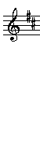

<!DOCTYPE HTML PUBLIC "-//W3C//DTD HTML 4.01 Transitional//EN"
 "http://www.w3.org/TR/html4/loose.dtd">


<html>

<head>
 
 <style type="text/css">
body{
overflow: hidden;

}

.text_area_form {
  position: absolute;
  left: 0px;
  top: 0px;
 width: 100%;
 height: 130px;
 
}

.btn{
   position: absolute;
  left: 0px;
  top: 140px;
 
 
 width: 100%;
 height: 30px;
 
}

#img_div{
   position: absolute;
  left: 0px;
  top: 175px;


}
</style>
<meta name="author" content="fly frog [fly-frog-fly@yandex.ru]">
<meta http-equiv="Content-Language" content="ru">
<meta http-equiv="Content-Type" content="text/html; charset=utf-8">

<title>Converter</title>
  
</head>


<body bgcolor="#c7fcec"    >
<div class="all">
<textarea id="notes" class="text_area_form" placeholder='введите ноты доступны - d,e,f#,g,a,b,c#,D,E,F#,G,A,B,C# - с маленькой буквы 1 октава, с большой 2-я'  ></textarea> 
<input type="button"   value="------------ Draw tabs ------------" onclick="print_tabs()" class="btn"/>
 
<div id="img_div" class="ground_mount"> </div>
 


 
 <script language="JavaScript" type="text/javascript">
var d = function(x){return document.getElementById(x);}
function ran(x){return  Math.round(Math.random()*x);}
 
 // 
 
var all = {}; 
all.pat = ["d","e","f#","g","a","b","c#","D","E","F#","G","A","B","C#"];
all.end = [];
function print_tabs(){
all.end = [];  
all.n = d("notes").value;

for(var i=0;i<all.pat.length;i++){

var p = 0; 
for(var e=0;e<all.n.length;e++){

if(all.n.indexOf(all.pat[i],p)!=-1){ 
var ob = {};
ob.notes = i;
ob.pos = all.n.indexOf(all.pat[i],p);
p = all.n.indexOf(all.pat[i],p)+1;
all.end.push(ob);
}

if(p>=all.n.length){break;}

}//for 2 

}//end for

all.end = sort_buble(all.end);
draw();
}//end function


function draw(){
var str = "";
str+='';
for(var i=0;i<all.end.length;i++){


 
str+='';

}//for
 
 
d("img_div").innerHTML=str;
}//end draw

 


function sort_buble(arr){ // сортировка для отображения в списке и при печати
 var m = arr;
 var count = m.length-1;
for (var i = 0; i < count; i++) 
     for (var j = 0; j < count-i; j++)
        if (m[j].pos> m[j+1].pos) {
           var max = m[j];
           m[j] = m[j+1];
           m[j+1] = max;
        }
return m ;
}

 

 
</script>
</body>
</html>
